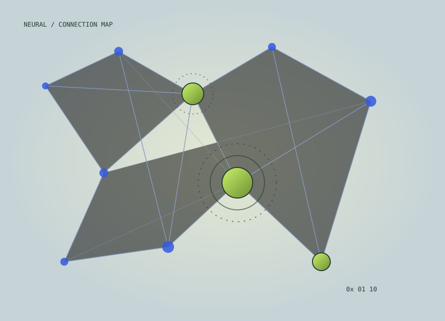
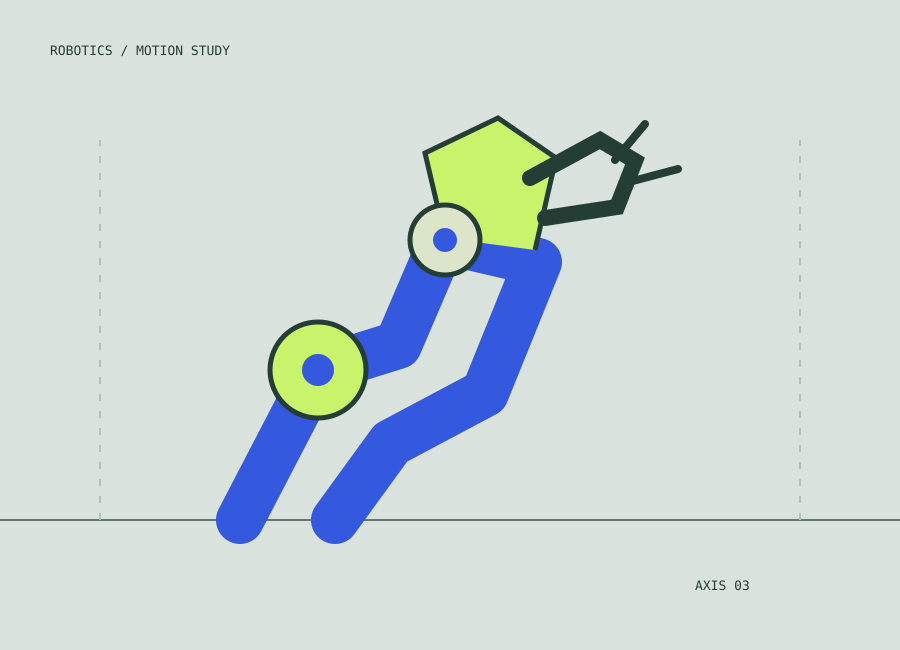
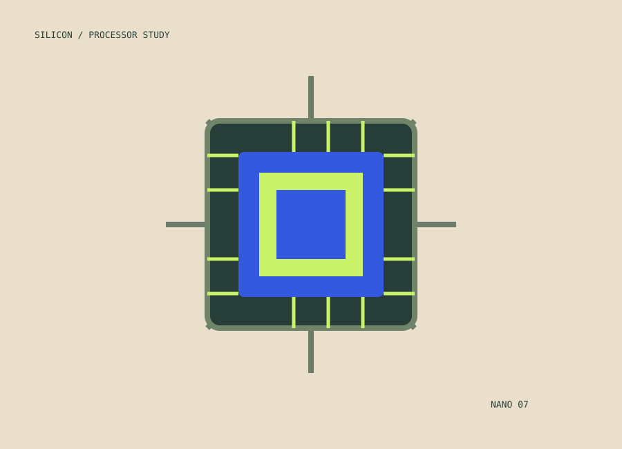

Машины учатся думать. Но понимают ли они нас?
Как работают языковые модели, на чём они учатся и почему их ответы требуют критического взгляда.
Написать редакции ↗РАЗДЕЛ 02 / СОЗДАННОЕ ЧЕЛОВЕКОМ
Технологии меняют не только инструменты, но и сам образ жизни. Смотрим на инженерные решения без шума вокруг хайпа.

NETWORK / 002ТЕХНОЛОГИЧЕСКИЙ ОБЗОР
Как работают языковые модели, на чём они учатся и почему их ответы требуют критического взгляда.
Написать редакции ↗
От производства до медицины — разбираемся, какие задачи роботы уже выполняют самостоятельно.
Написать редакции ↗
Миллиарды транзисторов на маленькой пластине — знакомимся с основой современной электроники.
Написать редакции ↗ЗАМЕТКА РЕДАКЦИИ
Поэтому мы говорим не только о возможностях, но и о последствиях: безопасности, доступности и ответственности.